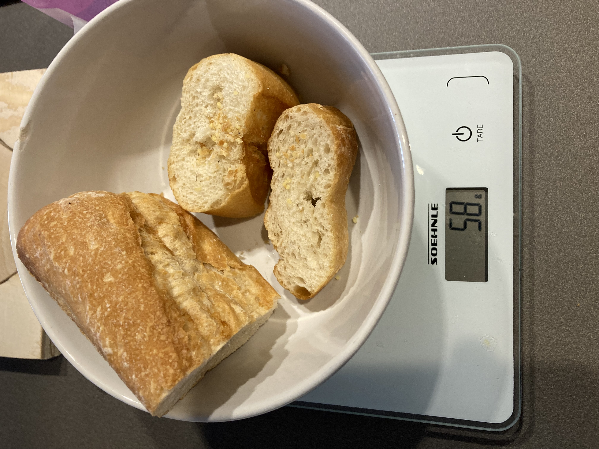
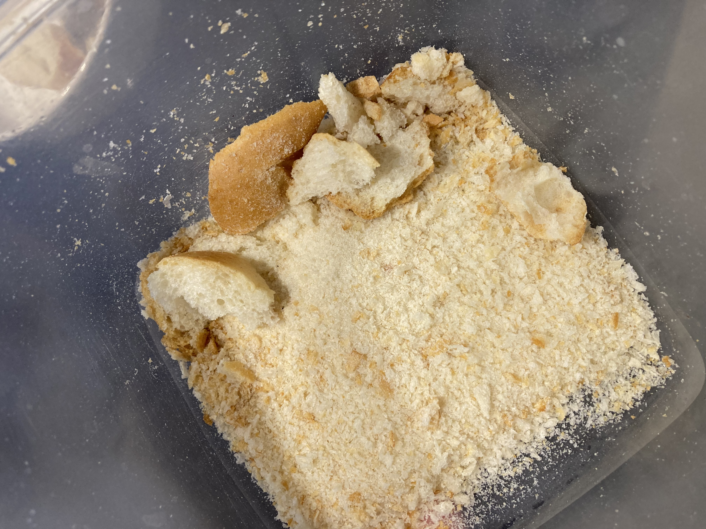

Then, I placed the resin in a pot with the appropriate amount of alcohol and waited for it to melt, stirring continuously. I did not enjoy the smell, but it looked very cool.


In the meanwhile, I thought about what “filler” to include in the mixture to make it bind well. I found some old, rock hard bread I’ve been keeping for the past few weeks and decided to grate it until it became small breadcrumbs. I added the crumbs to the mixture.